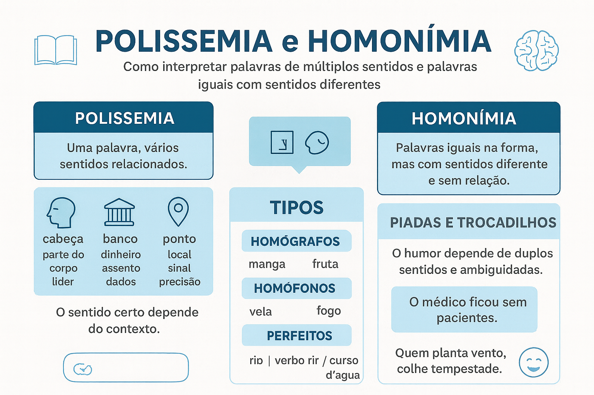

Polissemia e Homonímia: Como Reconhecer e Interpretar Palavras de Múltiplos Sentidos
A interpretação de textos na Educação Básica, no Ensino Superior e nos exames vestibulares exige muito mais do que a decodificação linear de regras sintáticas ou a busca passiva de vocábulos no dicionário. A competência leitora consolida-se na habilidade de analisar como o léxico se organiza e se flexiona diante das exigências do discurso. Nesse cenário, o domínio de fenômenos semânticos como a polissemia e a homonímia torna-se indispensável para compreender a arquitetura dos enunciados, identificar intenções implícitas e decifrar os efeitos estéticos e humorísticos de piadas, tirinhas, trocadilhos, charges e provérbios populares.
Ambos os fenômenos confrontam o leitor com a multiplicidade de sentidos sob uma mesma aparência fônica ou gráfica. Todavia, enquanto a polissemia espelha a vitalidade criativa e metafórica da língua — adaptando um mesmo termo histórico a novas necessidades comunicativas —, a homonímia resulta de convergências fonéticas acidentais entre palavras historicamente independentes.
Neste guia prático fundamentado na Semântica Lexical e na Linguística Textual, examinaremos os critérios operacionais para diagnosticar cada fenômeno, o papel do cotexto na desambiguação, a mecânica da quebra de expectativa no humor e um método passo a passo para a interpretação de provérbios e textos cotidianos.

1. Polissemia: uma palavra, múltiplos sentidos conectados
A polissemia caracteriza-se pela capacidade de uma única unidade lexical abrigar diversas acepções que preservam entre si um parentesco conceitual identificável. Tais sentidos ramificam-se historicamente a partir de um núcleo sêmico comum, impulsionados por extensões metafóricas (semelhança) ou metonímicas (contiguidade material e funcional).
A dinamicidade do signo linguístico
Para Rodolfo Ilari e João Wanderley Geraldi (2015), a língua não é um código estático, mas um organismo histórico em constante mutação: “A polissemia resulta da capacidade que as palavras possuem de se adaptar a contextos variados. Uma mesma forma lexical pode assumir diferentes interpretações sem que haja perda de sua identidade. Essa flexibilidade do signo linguístico é uma característica constitutiva das línguas naturais, que se reorganizam constantemente de acordo com as necessidades comunicativas de seus falantes.”
Exemplos consagrados de irradiação polissêmica
- Cabeça: parte do corpo humano ("Ele machucou a cabeça") → líder de equipe ("Ela é a cabeça do projeto") → início de lista ("Ficou na cabeça da fila") → extremidade de objeto ("A cabeça do alfinete"). Todos os usos preservam os traços de estar no topo, comandar ou possuir formato globular;
- Ponto: sinal ortográfico ("Ponto final") → local físico geográfico ("Ponto de encontro") → unidade de avaliação escolar ("Ganhou um ponto na média") → laçada em tecido ("Ponto de costura");
- Linha: fio têxtil de costura → itinerário de ônibus urbano → postura de conduta ética ("Mantenha a linha") → orientação teórica metodológica.
2. Homonímia: colisão formal entre histórias lexicais distintas
A homonímia ocorre quando dois ou mais vocábulos independentes apresentam a mesma forma superficial (na fala, na escrita ou em ambas), mas pertencem a raízes etimológicas totalmente autônomas, sem qualquer vínculo de significado.
A colisão histórica no léxico
Como elucida a lexicóloga Maria Tereza Camargo Biderman (2001): “A homonímia representa um ponto de colisão entre histórias lexicais distintas. Palavras que tiveram trajetórias etimológicas diversas podem assumir, em determinado estágio da língua, uma forma idêntica. A igualdade gráfica ou fônica, entretanto, não implica qualquer proximidade de significado, sendo responsabilidade do contexto eliminar ambiguidades.”
Modalidades de Homônimos
• Homófonos: mesmo som, grafia diferente.
Ex.: Cela (quarto/prisão) × Sela (arreio de montaria); Sessão (tempo) × Seção (departamento) × Cessão (ato de ceder).
• Homógrafos: mesma grafia, pronúncia diferente pelo timbre vocal.
Ex.: Almoço (/ô/ substantivo) × Almoço (/ó/ verbo); Colher (/é/ substantivo) × Colher (/ê/ verbo).
• Homônimos Perfeitos: mesmo som e mesma grafia rigorosamente.
Ex.: Manga (fruta) × Manga (da camisa); Rio (curso d'água) × Rio (forma do verbo rir); Vela (de cera) × Vela (do barco/do motor).
Diagnóstico Rápido: Polissemia ou Homonímia?
Para diferenciar ambos com segurança em provas e análises textuais, aplique o teste do parentesco conceitual:
1. Existe analogia lógica ou física entre os sentidos? Se sim, trata-se de Polissemia (uma palavra com novos galhos).
2. Os sentidos são mundos completamente estranhos entre si? Se sim, trata-se de Homonímia (árvores diferentes que caíram no mesmo lugar).
Atenção ao dicionário: a pista lexicográfica definitiva
Ao consultar um dicionário profissional (como o Houaiss ou o Caldas Aulete), você descobre a resposta técnica imediatamente: palavras polissêmicas ocupam um único verbete com acepções numeradas (1, 2, 3...). Homônimos geram verbetes separados encabeçados por números sobrescritos (manga¹ e manga²), atestando étimos independentes.
A mecânica da ambiguidade no humor, nos trocadilhos e nas tirinhas
A inteligência humorística apoia-se deliberadamente na manipulação de termos polissêmicos e homônimos para provocar o que a psicologia cognitiva chama de quebra de expectativa. O leitor inicia o processamento da frase ativando uma chave de leitura convencional; ao chegar ao desfecho, o enunciado obriga a mente a retroceder e ativar um segundo sentido imprevisto.
Análise de Casos de Humor Verbal
Caso 1 (Polissemia do vocábulo "Paciente"):
"O médico cirurgião entrou em crise porque ficou sem pacientes."
→ A polissemia joga com a acepção clínica (indivíduo sob cuidados médicos) e a acepção comportamental/afetiva (pessoa dotada de paciência e calma). O humor emerge da duplicidade de interpretação do estado emocional e profissional do médico.
Caso 2 (Homonímia do vocábulo "Banco"):
"Fui ao banco depositar meu salário, mas ele estava fechado. Então, sentei no da praça para lamentar a vida."
→ A piada confronta a instituição monetária de crédito e o assento público de madeira. O cotexto inicial direciona para as finanças e o desfecho recorta o suporte físico de descanso.
Polissemia e homonímia na interpretação de provérbios e ditos populares
Os provérbios da sabedoria popular dependem intensamente da polissemia metafórica. Eles operam como alegorias condensadas que retiram termos de seu domínio original (como a agricultura ou o meio físico) e os projetam sobre a conduta moral e social do ser humano:
- "Quem planta vento, colhe tempestade": Os verbos plantar e colher transcendem a atividade agrícola literal, assumindo o sentido polissêmico de semear discórdias e receber consequências desastrosas proporcionais;
- "Água mole em pedra dura, tanto bate até que fura": A persistência física da gota mineral projeta-se sobre a perseverança psicológica e moral nos estudos e no trabalho;
- "Em terra de cego, quem tem um olho é rei": O vocábulo olho deixa de ser apenas o globo ocular e torna-se índice de lucidez crítica, conhecimento e discernimento intelectual em meio à alienação coletiva.
Quadro comparativo para estudo e fixação rápida
| Critério de Comparação | Polissemia | Homonímia |
|---|---|---|
| Identidade Lexical | Uma única palavra com múltiplos sentidos. | Duas ou mais palavras diferentes com forma coincidente. |
| Origem Etimológica | Étimo histórico comum (mesma raiz linguística). | Étimos históricos totalmente independentes e autônomos. |
| Relação Semântica | Existe parentesco conceitual, metáfora ou analogia. | Não há relação alguma de significado entre os termos. |
| Registro Lexicográfico | Entrada única com acepções numeradas (1, 2, 3...). | Entradas de verbetes separadas (palavra¹, palavra²). |
| Exemplos Típicos | Pé (do corpo / da mesa / da montanha); Rede (de pesca / social / de dados). | Manga (fruta / roupa); São (sadio / santo / forma de ser); Cera × Sera. |
Esquema pedagógico: o itinerário da desambiguação textual
Passo a passo para a interpretação de múltiplos sentidos
Leitura do enunciado integral (identificação da palavra que gera duplicidade) → Análise do cotexto sintático (quais verbos e adjetivos acompanham o termo?) → Exame da situação comunicativa (qual o gênero textual: piada, anúncio, poema ou contrato?) → Aplicação do filtro de plausibilidade (qual sentido torna o texto perfeitamente coerente?) → Apreensão do efeito estético final (reconhecimento do humor, ironia ou precisão técnica).
Questões para estudo e reflexão
Questão 1
Por que o estudo etimológico da história da língua é fundamental para delimitar a fronteira entre polissemia e homonímia?
Ver resposta comentada
Resposta comentada: Porque a etimologia recupera a gênese histórica das palavras. É ela que permite comprovar se os múltiplos significados de um vocábulo derivaram de um único étimo latino ou grego que se expandiu por analogia (polissemia), ou se derivaram de palavras primitivas totalmente distintas que, por desgaste sonoro ou evolução ortográfica acidental ao longo dos séculos, passaram a ter a mesma forma na sincronia atual (homonímia).
Questão 2
Como a teoria dos tropos (metáfora e metonímia) atua na gênese das palavras polissêmicas na Língua Portuguesa?
Ver resposta comentada
Resposta comentada: A polissemia nasce da necessidade de expressar novas realidades sem sobrecarregar a memória com palavras inéditas. Para isso, os falantes realizam metáforas (projeção de semelhanças, como chamar a entrada do túnel de boca) ou metonímias (transferência por contiguidade funcional, como chamar a instituição financeira de banco a partir do móvel de madeira onde os banqueiros medievais operavam).
Questão 3
De que maneira as tirinhas cômicas de jornais exploram o choque entre polissemia e homonímia para construir a crítica social?
Ver resposta comentada
Resposta comentada: As tirinhas utilizam a ambiguidade para confrontar o discurso oficial ou ingênuo com a dura realidade dos fatos. Ao acionar simultaneamente dois sentidos de uma mesma palavra (um positivo e formal, outro crítico e popular), o cartunista surpreende o leitor e desmonta a retórica ideológica do poder público, tornando a sátira mais contundente e memorável.
Questão 4
Qual é a diferença funcional entre homônimos homófonos e homônimos homógrafos? Dê um exemplo de cada.
Ver resposta comentada
Resposta comentada: Os homófonos possuem a mesma pronúncia, mas grafias diferentes (ex.: censo [recenseamento demográfico] e senso [juízo, capacidade de julgar]). Os homógrafos possuem a mesma grafia, mas pronúncias diferentes em virtude do timbre da vogal tônica (ex.: choro [/ô/ substantivo correspondente ao ato de chorar] e choro [/ó/ forma do verbo chorar]).
Questão 5
Na frase proverbial "Água mole em pedra dura, tanto bate até que fura", como a polissemia metafórica transcende a literalidade do fenômeno geológico?
Ver resposta comentada
Resposta comentada: A frase não pretende instruir o leitor sobre a erosão hidrológica das rochas minerais; ela utiliza os termos concretos (água, pedra, bater, furar) como uma grande alegoria polissêmica. O sentido figurado ensina que a perseverança contínua e a paciência disciplinada são capazes de superar os obstáculos humanos mais rígidos e aparentemente intransponíveis.
Resumo sobre como reconhecer e interpretar múltiplos sentidos
- A polissemia envolve uma mesma palavra que adquiriu múltiplos sentidos conectados por parentesco conceitual;
- A homonímia resulta da convergência acidental de palavras independentes em sua forma fônica ou gráfica;
- O critério definitivo reside na etimologia e na presença de um núcleo sêmico de base compartilhado;
- Nos dicionários, a polissemia reúne acepções numeradas em um só verbete, enquanto homônimos geram verbetes autônomos;
- Os homônimos subdividem-se em homófonos (mesmo som), homógrafos (mesma grafia) e perfeitos (mesmo som e escrita);
- O humor e a sátira nascem da quebra de expectativa provocada pela ativação de um segundo sentido imprevisto no desfecho da frase;
- Os provérbios populares articulam a polissemia metafórica para traduzir ensinamentos éticos e comportamentais duradouros.
Perguntas frequentes sobre polissemia e homonímia na interpretação
Como saber se uma palavra é polissêmica ou homônima em uma prova?
Pergunte-se se os dois significados guardam alguma semelhança lógica, formato parecido ou analogia funcional. Se houver relação de sentido, é polissemia (ex.: boca da garrafa e boca humana). Se não houver relação alguma, é homonímia (ex.: manga fruta e manga de camisa).
O que é quebra de expectativa no humor verbal?
É o recurso retórico que conduz o ouvinte a pensar em um sentido comum de determinada palavra ao longo da frase, revelando no final um segundo significado inesperado, provocando a surpresa que gera o riso.
Por que as palavras polissêmicas são tão comuns na língua?
Porque o cérebro humano prefere reaproveitar palavras conhecidas para nomear coisas novas por meio de metáforas a ter que criar e memorizar um vocábulo inédito para cada invenção ou objeto do mundo.
O que são homônimos perfeitos?
São vocábulos que têm rigorosamente a mesma grafia e o mesmo som, mas significados e origens etimológicas totalmente separados, como rio (curso d'água) e rio (verbo rir).
Como o contexto desfaz o duplo sentido?
As palavras ao redor (cotexto) impõem restrições semânticas que eliminam as leituras absurdas: em "comprei um cacho de uvas frescas", a palavra cacho só pode significar agrupamento de frutos, descartando cacho de cabelo.
Qual a diferença entre polissemia e ambiguidade involuntária?
A polissemia é uma riqueza natural do vocabulário da língua. A ambiguidade involuntária é um defeito de redação que ocorre quando o autor constrói uma frase descuidada que deixa o leitor sem saber qual dos sentidos é o pretendido.
Todos os provérbios são polissêmicos?
A maioria dos provérbios apoia-se em metáforas polissêmicas, pois suas palavras possuem um sentido literal imediato e um sentido figurado mais profundo, que é o que realmente transmite a lição moral da sabedoria popular.
Por que trocadilhos são muito usados em slogans de propaganda?
Porque a surpresa provocada pela descoberta do duplo sentido prende a atenção do consumidor por mais tempo, tornando a marca e a mensagem publicitária muito mais memoráveis e persuasivas.
Considerações finais
Aprender a reconhecer e interpretar palavras de múltiplos sentidos liberta o leitor das armadilhas da interpretação literalista e ingênua. A linguagem humana não opera como um código rígido de instruções computacionais; ela é um tecido vivo de metáforas, heranças históricas, convenções culturais e intencionalidades negociadas no calor do diálogo social.
Ao assimilar os mecanismos da polissemia e da homonímia, estudantes, professores e profissionais da escrita desenvolvem agudeza analítica para transitar entre a precisão da argumentação técnica e o encantamento da fruição estética, tornando-se sujeitos autônomos na leitura do mundo e da palavra.
Conteúdos relacionados
- Noções Iniciais de Semântica: o Significado nas Palavras
- Relações Semânticas no Léxico: Conexões de Sentido e Coesão
- Denotação e Conotação: Sentidos Literal e Figurado na Linguagem
- Sentido Literal e Sentido Figurado: Mecanismos e Expressividade
- Ambiguidade e Inferência Semântica no Contexto Textual
- Campo Semântico e Campo Lexical: Redes e Famílias de Palavras
- Polissemia e Homonímia: Fenômenos dos Múltiplos Sentidos
- Semântica — Índice Completo de Conteúdos
Referências
- BIDERMAN, Maria Tereza Camargo. As ciências do léxico: lexicologia, lexicografia e terminologia. São Paulo: Contexto, 2001.
- CAPES, Magali Sanches. Semântica e ensino: sentidos e interpretação na prática pedagógica. Campinas: Pontes Editores, 2012.
- COSERIU, Eugenio. Introdução à linguística. São Paulo: Global, 2004.
- ILARI, Rodolfo; GERALDI, João Wanderley. Semântica. 10. ed. São Paulo: Ática, 2015.
- LYONS, John. Semantics. Cambridge: Cambridge University Press, 1977. v. 1 e 2.
- ULLMANN, Stephen. Semântica: uma introdução à ciência do significado. Lisboa: Fundação Calouste Gulbenkian, 1962.
Explore Outros Conteúdos
Continue seus estudos acessando outras seções do site Mestre Kira: